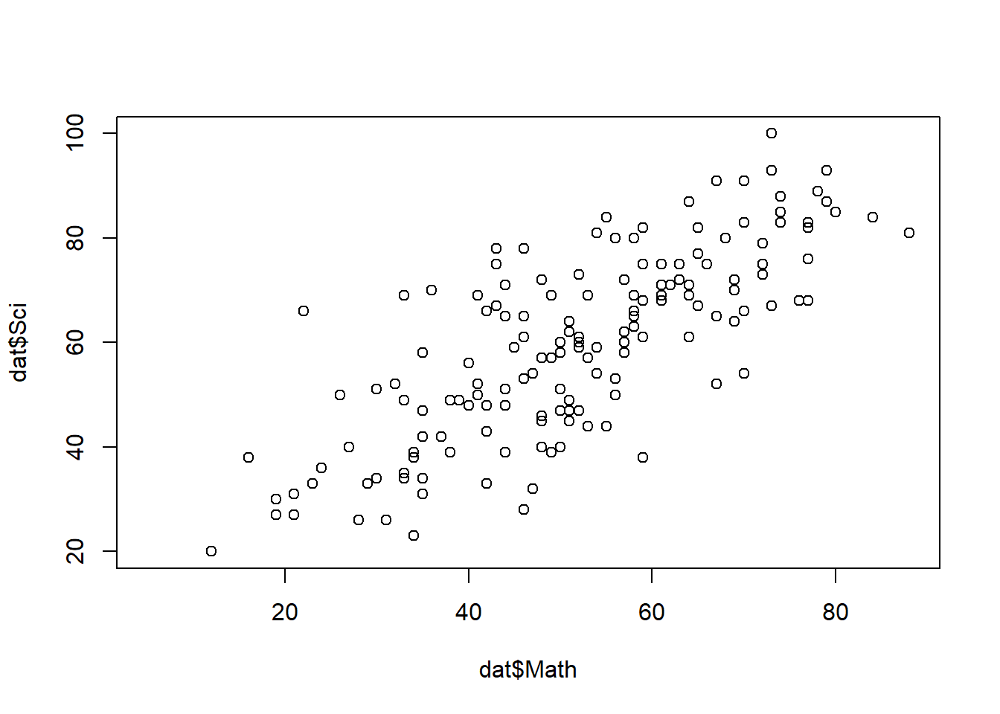
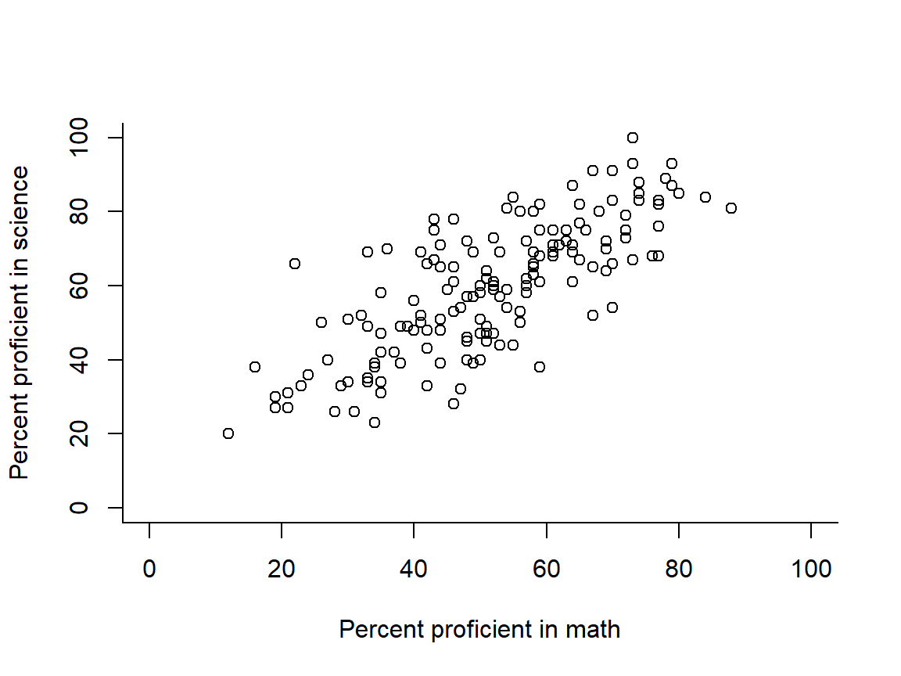
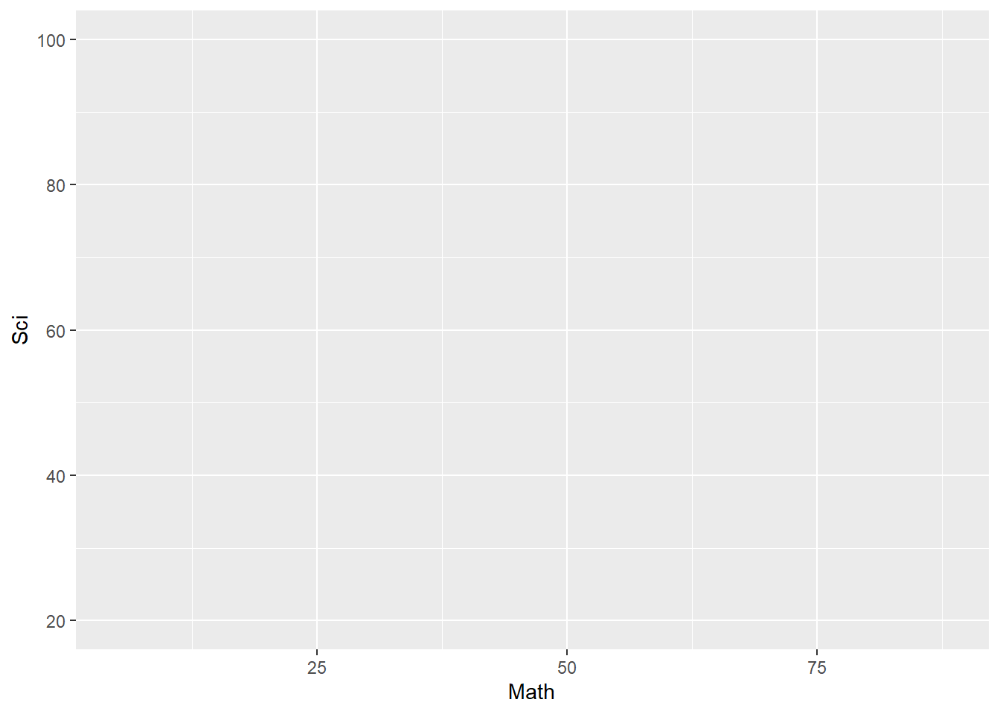
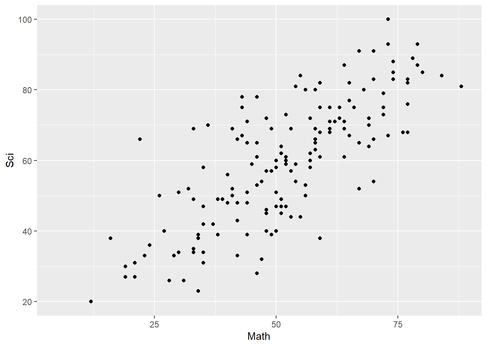
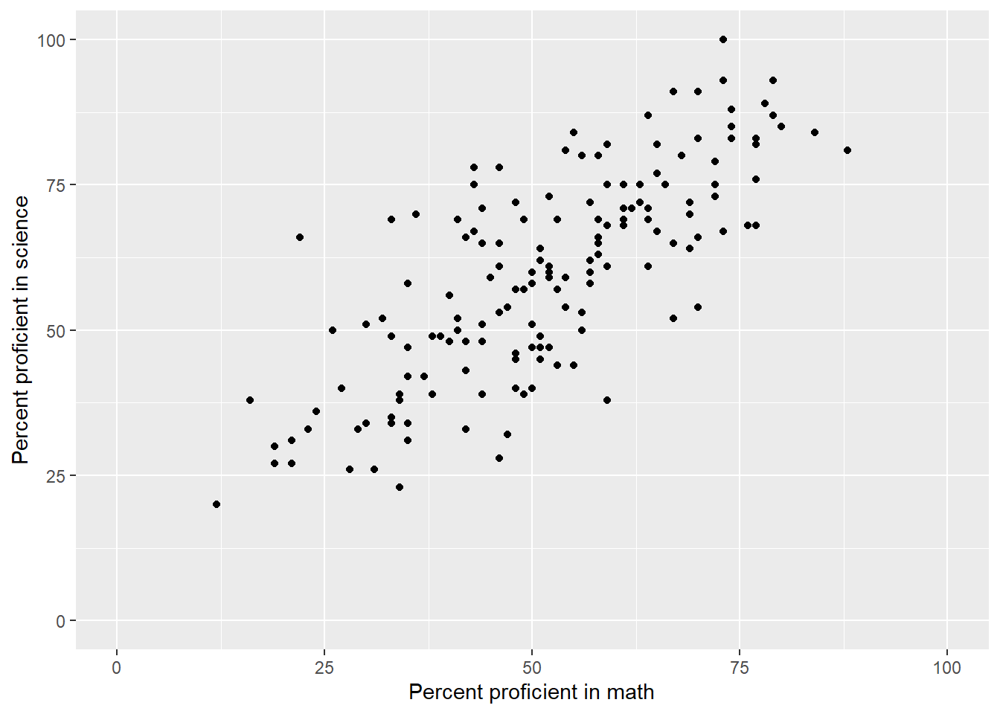
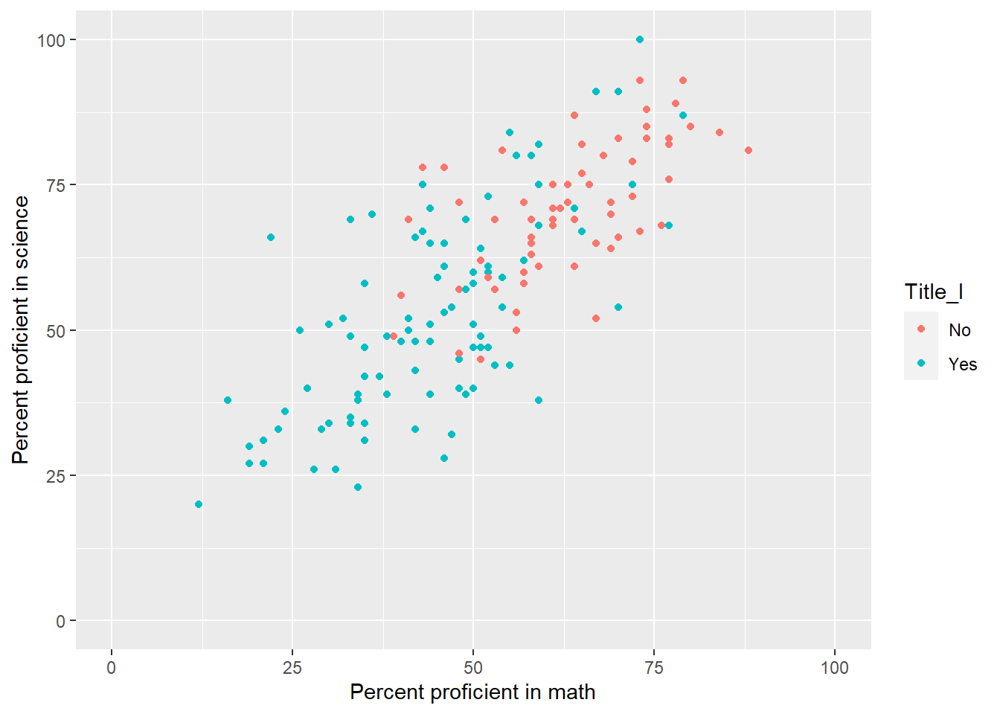
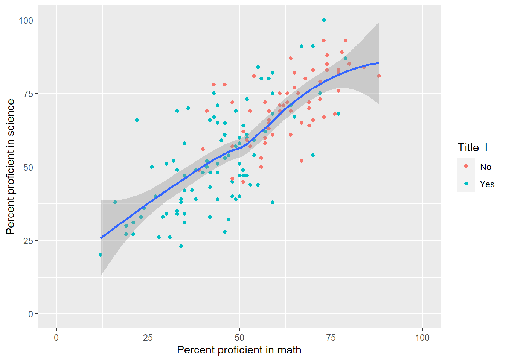
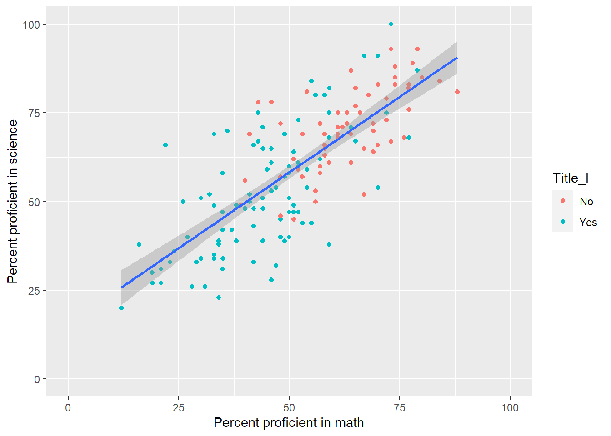
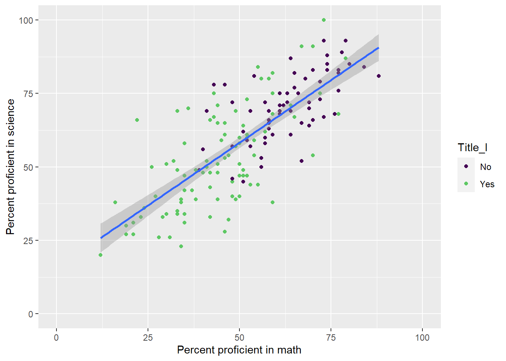
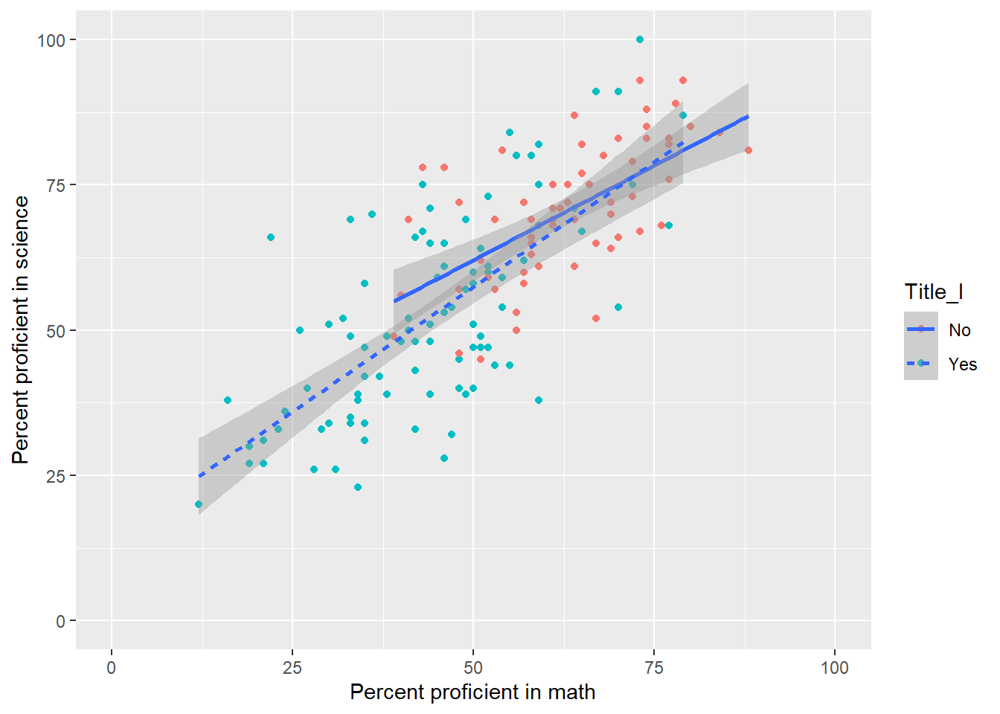

Chapter 6 Graphing
Let’s plot the data from our earlier data set in the Variance, Covariance, Correlation section.
6.1 Using Base R
Here is a very simple scatterplot of Math and science using Base R’s plotting functions:

We can make it fancier by making the border an L shape, and adding limits to the X and Y axes, and adding labels. Because these are the percentage of students in the schools meeting proficiency, let’s make the limits between 0 and 100.
par(bty="l")
plot(dat$Math, dat$Sci,
ylim = c(0,100),
xlim = c(0, 100),
ylab="Percent proficient in science",
xlab="Percent proficient in math")
6.2 Using the ggplot2 package
If you like to make pretty plots, the ggplot2 package (Wickham, Chang, et al., 2020) may be worth becoming familiar with.
We need to bring the ggplot2 package into our library (and install it if we need to):
The ggplot() function first creates a map from our data and from the x and y axis variables from our data set (here, Math and Sci).

Notice that the axes are there, but there’s nothing in the graphic. There are many types of geometric graphics we can add. Let’s create a scatter plot using the geom_point() addition. We need a + at the end of the first line if we add stuff in the subsequent line. This is analogous to the pipe %>% in Tidyverse.
## Warning: Removed 12 rows containing missing values (geom_point).
Let’s make the x and y axis range from 0 to 100 (because they are percentages) and add axis labels.
ggplot(data = dat, aes(x = Math, y = Sci)) +
xlim(0, 100) + ylim(0, 100) +
xlab("Percent proficient in math") +
ylab("Percent proficient in science") +
geom_point()
We can save this to an object:
my_plot<- ggplot(dat, aes(x = Math, y = Sci)) +
xlim(0, 100) + ylim(0, 100) +
xlab("Percent proficient in math") +
ylab("Percent proficient in science") +
geom_point()
my_plot
We can add details to our plot. Let’s use the geom_point() again, but color code the points based on whether they are Title I schools or not. To do this, we add another aesthetic:

Let’s see it again:

Hey! Why didn’t it save it?
I needed to save desired changes to my object. Let’s do that:

That’s better
Let’s see if the relationship appears to be linear:

It does. Let’s make it a linear line:

We can add other fancy stuff. Let’s change the color so it is a little friendlier to most types of color-blindness:

We can also use other aesthetics to communicate groups.

There are other graphics packages in R that other packages use. We will use Base R and sometimes ggplot, though I hope we can use ggplot more. For a quick reference on using ggplot go to RStudio’s cheat sheet. For a deeper explanation, see Winston Chang’s book (Chang, 2019) on the topic. RStudio also provides several R primers, one of which is specific to gglot2.
References
Chang, W. (2019). R graphics cookbook: Practical recipes for visualizing data (2nd ed.). O’Reilly. https://r-graphics.org
Wickham, H., Chang, W., Henry, L., Pedersen, T. L., Takahashi, K., Wilke, C., Woo, K., Yutani, H., & Dunnington, D. (2020). Ggplot2: Create elegant data visualisations using the grammar of graphics. https://CRAN.R-project.org/package=ggplot2